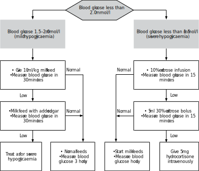

Before you begin this unit, please take the corresponding test to assess your knowledge of the subject matter. You should redo the test after you’ve worked through the unit, to evaluate what you have learned.
When you have completed this unit you should be able to:
Explain why the body needs glucose.
Define hypoglycaemia.
List the dangers of hypoglycaemia.
Diagnose hypoglycaemia.
Identify infants at risk of hypoglycaemia.
Prevent and treat hypoglycaemia.
Discuss the causes and management of hyperglycaemia.
Glucose control
8-1 What is glucose?
Glucose is a simple sugar. It is obtained from the diet by the breakdown of more complex carbohydrates (such as starch) and from the conversion of other dietary sugars (such as lactose in milk). Fat and protein in the diet can also be converted by the liver into glucose. Glucose is an essential source of energy to many cells of the body, especially the brain. Glucose is absorbed from the gut and stored in the body as:
Glycogen in the liver
Protein in muscles
Fat under the skin
Glycogen, protein and fat form the body’s energy stores. They can all be converted back into glucose by the liver if needed.
The amount of glucose available to the cells can be assessed by measuring the concentration of glucose in the blood. Glucose is the same as dextrose.
Note
The fetus gets most of its energy from the mother in the form of glucose which crosses the placenta. The higher the mother’s blood glucose concentration, the more glucose the fetus will receive.
8-2 How is glucose measured in the blood?
The concentration of blood glucose can be measured by different methods:
The quickest, cheapest and easiest method in the nursery to measure the blood glucose concentration is to use a reagent strip such as Haemo-Glukotest (Dextrostix is no longer available). The colour of the reagent strip is then compared to the colour range on the bottle to determine the blood glucose concentration. Unfortunately reading the result by eye is not reliable while reagent strips may give a false low reading if the method is not done correctly.
A more accurate method to screen for hypoglycaemia is to use a glucose meter (a reflectance meter) such as reading Haemo-Glukotest strips with a Reflolux meter or AccuChek Active strips with a Glucotrend meter or AccuChek Active meter. This is much better than simply reading the reagent strip by eye. It is essential that the correct meter is used with the reagent strips designed for that meter.
In a laboratory the serum glucose concentration can be measured using a more complicated method. The laboratory method is more accurate than reagent strips but takes longer, is more expensive and requires more blood.
The blood glucose concentration in the nursery is usually measured with a reagent strip and a glucose meter.
8-3 What is the normal concentration of glucose in the blood?
The normal concentration of glucose in the blood of newborn infants is 2.0 mmol/l (35 mg/dl) to 7.0 mmol/l (120 mg/dl). This is called normoglycaemia (normo = normal; glycaemia = blood glucose). Most newborn infants have a blood glucose concentration in the middle of the normal range, about 3 to 5 mmol/l. The normal range for older children and adults is higher than this. It is preferable to use the metric units of mmol/l rather than the old units of mg/dl.
Note that the normal blood glucose concentration, as measured with reagent strips, is 0.5 mmol/l lower than the serum glucose concentration, as measured in the laboratory.
The normal range of blood glucose concentration in newborn infants is 2.0 mmol/l to 7.0 mmol/l.
Note
One mmol/l of glucose equals 18 mg/dl.
8-4 What is hypoglycaemia?
A blood glucose concentration below 2.0 mmol/l (35 mg/dl) is abnormal and, therefore, defined as hypoglycaemia (hypo = low; glycaemia = blood glucose). Mild hypoglycaemia is defined as a blood glucose concentration between 1.5 to 2.0 mmol/l while severe hypoglycaemia is defined as a blood glucose concentration of less than 1.5 mmol/l (25 mg/dl). Whenever a reagent strip gives a reading below 1.5 mmol/l, a sample of blood should be taken, if possible, to confirm the diagnosis of hypoglycaemia by a laboratory measurement. The definition of hypoglycaemia when serum is sent to the laboratory is a concentration below 2.5 mmol/l (blood glucose is lower than serum glucose concentrations).
Note
The definition of hypoglycaemia in newborn infants remains debatable with textbooks often giving different cut-off points.
Hypoglycaemia is defined as a blood glucose concentration below 2.0 mmol/l.
8-5 What are the dangers of hypoglycaemia?
Hypoglycaemia is extremely dangerous especially when the blood glucose concentration is below 1.5 mmol/l. When the blood glucose concentration is low the cells of the body, particularly the brain, do not receive enough glucose and cannot produce energy for their metabolism. As a result the brain cells can be damaged or die, causing cerebral palsy, mental retardation or death.
Hypoglycaemia may cause brain damage or death.
8-6 When are infants at risk of developing hypoglycaemia?
Infants are at an increased risk of developing hypoglycaemia when:
They have reduced energy stores.
They have increased energy needs.
8-7 Which infants have reduced energy stores?
The supply of glucose into the blood is reduced when the body’s energy stores are low, such as reduced glycogen in the liver, protein in muscles, and fat under the skin.
The following newborn infants do not have adequate energy stores to convert into glucose:
Preterm infants. They are born before adequate amounts of glycogen, protein and fat are stored in their tissues. The fetus gets most of its energy stores in the last 6 weeks of pregnancy. Therefore, most preterm infants have very small energy stores.
Underweight for gestational age or wasted infants. They have either not built up energy stores or have used up most of their energy stores before delivery because they have not been getting enough glucose from their mother.
Starved infants. Infants that are not fed, either orally or intravenously soon after delivery, rapidly use up their energy stores.
Stressed infants, such as infants who are infected or who have suffered hypoxia, may be unable to convert their energy stores into glucose. This includes infants who need active resuscitation at birth.
Infants with liver damage, such as hepatitis, often have low stores of liver glycogen and also are unable to convert other energy stores into glucose.
8-8 Which infants have increased energy needs?
The following infants have increased energy needs and, therefore, rapidly use up their energy stores:
Infants with respiratory distress. Their respiratory muscles are doing a lot of work and require large amounts of glucose to provide the energy needed for respiration.
Hypothermic infants. These infants use large amounts of glucose and fat to produce heat in an attempt to correct their body temperature.
Infants of diabetic mothers. Before delivery these infants receive excess glucose across the placenta, especially if the maternal diabetes is poorly controlled. The higher the maternal glucose concentration, the more glucose the infant receives. This large supply of glucose makes the fetus obese and stimulates the fetal pancreas to secrete extra insulin. At delivery the supply of glucose from the mother suddenly stops when the umbilical cord is clamped. However, the stimulated fetal pancreas continues to secrete excessive amounts of insulin after delivery, and the high insulin concentration in the blood of the newborn infant causes hypoglycaemia.
Overweight for gestational age infants. Some of the mothers of these infants may be undiagnosed diabetics. Think of maternal diabetes in all obese infants.
Polycythaemic infants. Their increased number of red cells use a lot of glucose.
Hypothermia causes hypoglycaemia.
Note
With maternal diabetes, the mother is diabetic but the infant is not. In fact the problem in the infant is exactly the opposite to that in the mother. While the mother secretes too little insulin and, therefore, has a high blood glucose, the newborn infant secretes too much insulin and, therefore, becomes hypoglycaemic. Insulin acts as a fetal growth hormone. Excess fetal insulin, therefore, results in macrosomia.
Hypoglycaemia
8-9 Which infants have an increased risk of hypoglycaemia?
Those infants with a decreased supply of glucose or an increased demand for glucose (i.e. infants with small energy stores or large energy needs):
Low birth weight infants (either preterm or underweight for gestational age)
Wasted infants
Infants where there is a delay in the onset of feeding (infants who have not been fed)
Hypoxic infants and infants who need active resuscitation at birth
Infected infants
Infants with liver disease
Infants with respiratory distress
Hypothermic infants
Infants of diabetic mothers
Overweight for gestational age infants
Polycythaemic infants
Low birth weight infants and starved infants are at high risk for hypoglycaemia.
8-10 What are the clinical signs of hypoglycaemia?
Hypoglycaemia may produce no clinical signs or present with non-specific signs only. This makes the clinical diagnosis of hypoglycaemia very difficult. When present, the signs of hypoglycaemia are:
Depression of brain function. The infant may be lethargic and hypotonic, feed poorly, have a weak cry, apnoea, cyanosis or an absent Moro reflex.
Overstimulation of brain function. The infant may be jittery with a high-pitched cry, a fixed stare and fisting, have abnormal eye movements or convulsions.
Excessive sweating. This sign may not be present, however, especially in preterm infants.
Often an infant has some signs of brain stimulation (such as jitteriness )and other signs of brain depression (such as poor feeding) at the same time. Therefore, while some parts of the brain may be stimulated other parts may be depressed by hypoglycaemia. As a result, the clinical presentation of hypoglycaemia is very variable, making the clinical diagnosis of hypoglycaemia very unreliable.
Hypoglycaemic infants may have no abnormal clinical signs.
8-11 How can you diagnose hypoglycaemia?
The clinical diagnosis is difficult and often missed. Therefore, it is essential that all infants at risk of hypoglycaemia, and infants with clinical signs that may be caused by hypoglycaemia, be screened with reagent strips. Whenever possible, use a reflectance meter such as an Accu-chek or Glucotrend meter rather than reading the reagent strip by eye. Ideally a diagnosis of hypoglycaemia made with reagent strips should be confirmed with a laboratory serum glucose measurement.
An infant’s blood glucose concentration will fall into one of the following groups:
2.0 mmol/l or more. Remember that the normal range of blood glucose in newborn infants is 2.0 mmol/l to 7.0 mmol/l.
Between 1.5 mmol/l and 2.0 mmol/l. This is mild hypoglycaemia. These infants’ blood glucose concentration is abnormally low and they are at high risk of developing severe hypoglycaemia.
Less than 1.5 mmol/l. This is the definition of severe hypoglycaemia, which is very dangerous.
8-12 How can you prevent hypoglycaemia?
The following steps must be taken to prevent hypoglycaemia:
Identify all infants at high risk of developing hypoglycaemia.
Monitor the blood glucose concentration of these infants with reagent strips so that a falling blood glucose can be detected before hypoglycaemic levels are reached.
Feed all infants as soon as possible after delivery, especially preterm, underweight for gestational age and wasted infants, as well as infants of diabetic women.
Whenever possible, milk feeds should be given. Both clear feeds orally and oral dextrose feeds should not be used in newborn infants as they are low in energy and may result in hypoglycaemia.
If milk feeds cannot be given, then an intravenous infusion of 10% glucose (e.g. Neonatalyte) should be started.
Prevent hypothermia.
Early feeding with milk helps to prevent hypoglycaemia.
8-13 How should you treat an infant with mild hypoglycaemia?
These infants, with a blood glucose concentration between 1.5 mmol/l and 2.0 mmol/l, need milk feeds or intravenous glucose urgently to prevent severe hypoglycaemia:
If they tolerate oral or nasogastric feeds, give 10 ml/kg breast milk or milk formula immediately. Do not give 5% or 10% dextrose orally as the energy content is less than that of breast milk or milk formula.
Repeat the blood glucose measurement 30 minutes after the feed to determine whether the blood glucose concentration has returned to the normal range. If it is still in the mild hypoglycaemia range, repeat the feed with an added 5 ml sugar (one teaspoon) per 30 ml milk and repeat the blood glucose measurement after a further 30 minutes.
When the blood glucose concentration has returned to normal, continue with regular milk feeds and continue to monitor with reagent strips hourly for 3 hours. If the blood glucose concentration remains low despite 2 milk feeds, start an intravenous infusion.
If the blood glucose concentration falls below 1.5 mmol/l at any time, treat for severe hypoglycaemia.
If the infant is too small or too ill to tolerate milk feeds, start a 10% intravenous infusion (e.g. Neonatalyte). Monitor the blood glucose concentration with reagent strips and start milk feeds as soon as possible.
Remember that mild hypoglycaemia may rapidly progress to severe hypoglycaemia if not correctly treated.
Mild hypoglycaemia can usually be corrected with milk feeds.
8-14 How should you treat an infant with severe hypoglycaemia?
All infants with a blood glucose concentration below 1.5 mmol/l have severe hypoglycaemia. This is a medical emergency and must be treated immediately. Do not wait for the result of the laboratory measurement before starting treatment. The management of severe hypoglycaemia consists of the following steps:
The treatment of choice is to start an intravenous infusion of 10% dextrose (or Neonatalyte) at a drip rate calculated to give 60 ml/kg in the first 24 hours. Infants older than 24 hours can be given a larger volume calculated for their age.
Note
A 10% dextrose infusion at 60 ml/kg/24 hours will provide 0.22 mmol (4 mg) glucose/kg/minute which will meet most infants’ energy needs. To increase a 5% to a 10% glucose solution, add 10 ml of 50% dextrose to 100 ml 5% dextrose. Some infants will need a 15% glucose solution, however, to maintain a normal blood glucose concentration.
If you cannot rapidly establish a peripheral intravenous line, insert an umbilical vein catheter so that intravenous fluids can be given.
Once an intravenous line has been established, give 2 ml/kg of 10% glucose as a bolus. It is not advisable to inject a bolus of 25% or 50% dextrose as it is extremely hypertonic.
If the blood glucose concentration still has not returned to normal within a further 15 minutes, give 5 mg hydrocortisone intravenously.
Note
Take 5 ml of blood from these infants for glucose and insulin estimation before giving the hydrocortisone. This is very important in identifying the correct cause of the hypoglycaemia. Glucagon 0.3 mg/kg IM or IV can be used if hydrocortisone fails to correct the blood glucose concentration.
In an emergency, if you are unable to give intravenous dextrose, give the infant 10 ml/kg breast milk or formula (or cow’s milk if neither is available) by mouth or via a nasogastric tube. You can add 5 ml (a teaspoon) of sugar, or 5 ml of 50% dextrose, per 10 ml feed to increase the energy concentration. Do not give pure 50% dextrose as it will cause vomiting.
Start regular milk feeds as soon as possible. Extra sugar can be added to the milk feeds if necessary.
As the volume of milk feeds are increased the rate of the intravenous infusion can be reduced. Never suddenly withdraw intravenous dextrose as this may precipitate hypoglycaemia, as commonly happens if the drip infiltrates the tissues. Reduce the drip rate gradually when oral feeds are introduced.
Keep the infant warm.
Once the blood glucose concentration has returned to normal, monitor the blood glucose concentration hourly until full volume feeds have been established.
Note
Repeated or unresponsive hypoglycaemia may be due to a rare metabolic cause and urgent specialist medical advice must be sought. A sample of venous blood should be taken for further investigations.
The treatment of severe hypoglycaemia is an intravenous infusion of 10% dextrose.
8-15 How frequently should you measure the blood glucose concentration?
The blood glucose concentration should be closely monitored in infants at risk of hypoglycaemia and in infants who have had hypoglycaemia:
In most infants at high risk of hypoglycaemia, the blood glucose concentration should be measured hourly with for the first 3 hours, then 2 hourly for the next 3 hours. Thereafter the blood glucose should be monitored every 3 hours until 100 ml/kg/day milk feeds have been established which is usually in 24 to 48 hours.
Infants with mild hypoglycaemia should be monitored every 30 minutes until the blood glucose concentration has returned to the normal range. Readings should then be made hourly for 3 hours to ensure that the blood glucose concentration does not fall again. Thereafter, measure the blood glucose concentration every 2 hours until 100 ml/kg milk feeds are established.
Infants with severe hypoglycaemia should have their blood glucose concentration measured every 15 minutes until it has increased above 1.5 mmol/l. Then measure the blood glucose concentration as for infants with mild hypoglycaemia.
The greater the risk of hypoglycaemia the more frequently the blood glucose concentration should be monitored.
8-16 What is the prognosis after hypoglycaemia?
The risk of brain damage depends on the severity, duration and number of hypoglycaemic attacks. The prognosis is worst if the hypoglycaemia has produced clinical signs, especially convulsions. The risk of permanent brain damage is probably low if the hypoglycaemia is asymptomatic. However, asymptomatic hypoglycaemia remains dangerous and must be treated urgently as clinical signs may suddenly develop.
Hyperglycaemia
8-17 What is hyperglycaemia?
Hyperglycaemia (hyper = high; glycaemia = blood glucose) is defined as a blood glucose concentration above 7.0 mmol/l (120 mg/dl). Usually hyperglycaemia does not cause problems until the blood glucose concentration increases above 10 mmol/l.
8-18 What is the cause of hyperglycaemia?
Hyperglycaemia is usually due to a 10% dextrose or Neonatalyte infusion given to a preterm infant during the first few days of life. Some immature infants are not able to remove glucose fast enough from the blood stream.
Hyperglycaemia may be caused by a severe intraventricular haemorrhage.
The stress of hypoxia or infection may increase or decrease the blood glucose concentration.
Note
Transient or permanent neonatal diabetes is a rare cause of hyperglycaemia.
8-19 What are the dangers of hyperglycaemia?
A high blood glucose concentration results in a lot of glucose being excreted in the urine (glycosuria), which in turn may cause polyuria and lead to dehydration. Mild glycosuria is common in preterm infants and does not require treatment.
Severe hyperglycaemia increases the risk of intraventricular haemorrhage in preterm infants.
8-20 How should you treat hyperglycaemia?
The raised blood glucose concentration usually can be lowered into the normal range by simply changing the intravenous solution from Neonatalyte or 10% dextrose to a 5% dextrose solution. Once milk feeds are established, hyperglycaemia usually returns to normal.
Case study 1
A term infant is brought to a rural clinic after having been born at home. The infant is cold and wasted but otherwise appears well. A reagent strip reading is between 1.5 and 2.0 mmol/l when the colour is matched against the container.
1. What is your interpretation of the blood glucose concentration?
The infant has mild hypoglycaemia. This should be confirmed with a reflectance meter if possible as reading a reagent strip by eye is not very accurate.
2. What is the danger of mild hypoglycaemia?
The infant is at high risk of developing severe hypoglycaemia.
3. Why does this term infant have a low blood glucose concentration?
Because the infant is cold. Hypothermic infants increase the rate at which they break down glucose in order to produce heat. Eventually the energy stores become depleted and hypoglycaemia may result. In addition this infant is wasted and, therefore, has reduced energy stores.
4. Why is this infant at risk of brain damage?
Because the infant has mild hypoglycaemia. This may progress to severe hypoglycaemia if not correctly managed. Remember that even without clinical signs, hypoglycaemia is still dangerous.
5. How would you treat this infant at the clinic?
Give the infant a feed of breast milk, formula milk or sweetened cow’s milk. The infant must also be warmed. The blood glucose concentration should have returned to normal in 30 minutes. If not, repeat the feed and arrange urgent transport to the nearest hospital. If the infant develops severe hypoglycaemia, or is to be transported, an infusion with Neonatalyte or 10% dextrose must be started. It is very important to start treatment before referring the infant to hospital. The blood glucose concentration must be carefully monitored during transport.
Case study 2
A preterm infant of 1500 g is born in a level I hospital. The infant is nursed in a closed incubator but no feed is given for 2 hours. At 1 hour after birth the Haemo-Glukotest reading with a Reflolux meter is normal but at 2 hours after birth the reading indicates severe hypoglycaemia. The infant is jittery with a poor Moro reflex.
1. Why is this infant hypoglycaemic?
The infant is preterm and, therefore, has little energy store. In addition the infant has not been fed for 2 hours after birth. The normal blood glucose concentration at 1 hour indicates that the infant had energy stores to last 1 but not 2 hours.
2. How could the hypoglycaemia have been prevented?
Breast or formula feeds via a nasogastric tube or an intravenous infusion should have been started within an hour of delivery.
3. Could the hypoglycaemia have caused the jitteriness and poor Moro reflex?
Yes. The brain uses glucose to obtain energy. Therefore, hypoglycaemia interferes with the normal functioning of the brain and may cause both depression of brain function resulting in a poor Moro reflex and overstimulation of the brain resulting in jitteriness.
4. How would you treat this infant?
An intravenous infusion of 10% dextrose or Neonatalyte must be started immediately at a rate to give 60 ml/kg/day. Add 2 ml/kg of 10% dextrose as a bolus. Repeat the reagent strip measurement after 15 minutes. If it is still low give a dose of 5 mg hydrocortisone intravenously. Start milk feeds every 2 hours as soon as possible. If the milk feeds are tolerated and the blood glucose concentration returns to normal, then the rate of the 10% dextrose infusion can be slowly reduced. Monitor the blood glucose concentration carefully.
5. Why could this infant not be treated with 5% dextrose orally?
Because 5% dextrose does not contain enough glucose to rapidly correct hypoglycaemia.
6. Has this infant already suffered brain damage?
It is possible as the infant has symptomatic hypoglycaemia. With immediate treatment there is a good chance that this infant will not suffer permanent brain damage.
Case study 3
An infant weighing 4500 g is born to a patient whose diabetes was poorly controlled during pregnancy. The infant is sweating a lot and has a convulsion. The blood glucose concentration is 0 mmol/l. Attempts to give 10% dextrose water via a scalp vein needle fail as the staff cannot find a suitable vein.
1. Why is this infant hypoglycaemic?
Because the mother is a poorly controlled diabetic. Excessive glucose crosses the placenta to the fetus and this stimulates the fetal pancreas to secrete excessive insulin. Soon after birth the infant becomes hypoglycaemic as a result of the large amount of insulin still being secreted by the infant’s pancreas.
2. Can hypoglycaemia cause sweating and convulsions?
Yes, in both infants and adults hypoglycaemia may present with sweating and convulsions. The convulsions are worrying as they suggest that the function of the brain has been severely affected.
3. What should the staff do if they cannot find a suitable vein?
Give 10% dextrose or Neonatalyte via an umbilical vein catheter.
4. What should be done if the hypoglycaemia cannot be corrected with an infusion of 10% dextrose?
Give 5 mg hydrocortisone intravenously.
5. How could the hypoglycaemia have been prevented?
The maternal diabetes should have been well controlled. As this infant is at very high risk of hypoglycaemia due to the poor diabetic control and high birth weight, milk feeds should have been given straight away and a 10% dextrose or Neonatalyte infusion started. Once feeds are tolerated and the reagent strip readings are normal, the infusion can gradually be slowed.

Figure 8-1: The acute management of an infant with hypoglycaemia